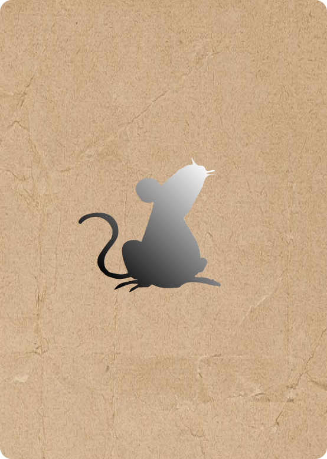
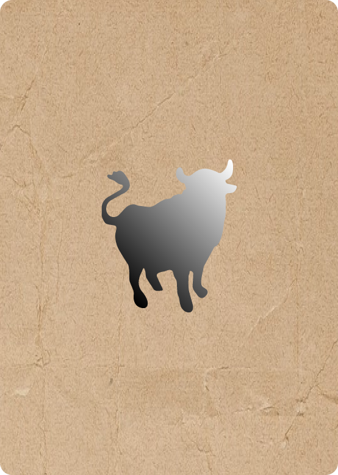
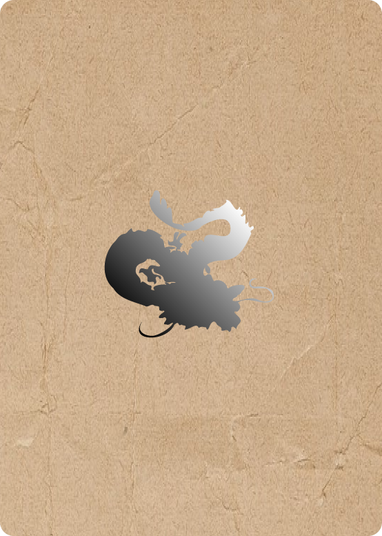
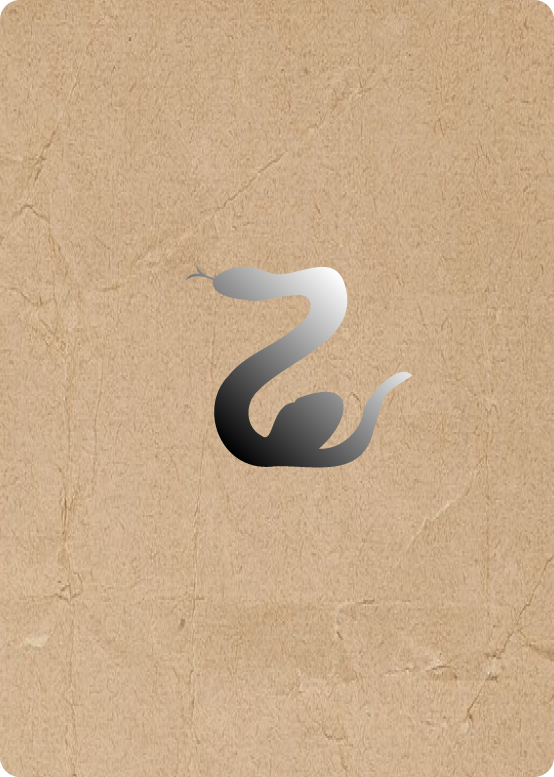
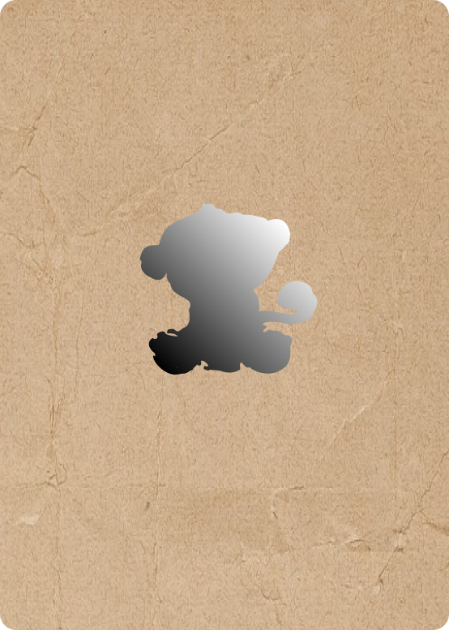
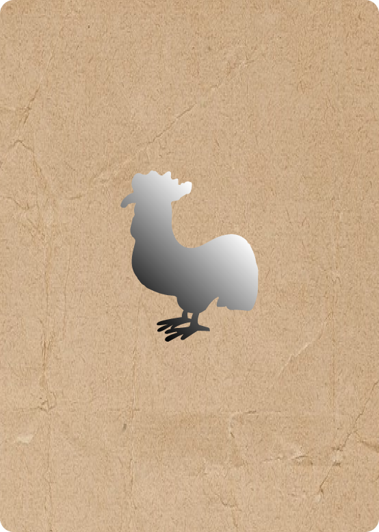

X
계절 : 겨울
시간 : 23 ~ 01시
성격 : 쥐띠의 성격은 관찰력과 유머 감각이 풍부하고 적극적입니다.
특징 : 경주에서 1등을 차지한 만큼 근면하고 민첩함 다산, 풍요 기원을 상징 쥐띠는 신중하고 절약하는 편이지만, 흥분하면 상대가 누구든 달려들기 때문에 자제력이 필요할 수 있다.
자 / 子
동물 : 쥐계절 : 겨울
시간 : 23 ~ 01시
성격 : 쥐띠의 성격은 관찰력과 유머 감각이 풍부하고 적극적입니다.
특징 : 경주에서 1등을 차지한 만큼 근면하고 민첩함 다산, 풍요 기원을 상징 쥐띠는 신중하고 절약하는 편이지만, 흥분하면 상대가 누구든 달려들기 때문에 자제력이 필요할 수 있다.
子
이미지를 클릭해주세요

X
계절 : 겨울
시간 : 01 ~ 03시
성격 : 소띠는 인내심이 강하고 부지런한 성격입니다.
특징 : 과묵하고 똑똑한 면모를 가진 소. 승부욕이 강해서 남보다 빠르게 목표를 달성하면 설화에서 제일 열심히 노력하고 순해 보여도 고집이 센 편이고 화가 나면 엄청 무서우니까 조심하십시오.
축 / 丑
동물 : 소계절 : 겨울
시간 : 01 ~ 03시
성격 : 소띠는 인내심이 강하고 부지런한 성격입니다.
특징 : 과묵하고 똑똑한 면모를 가진 소. 승부욕이 강해서 남보다 빠르게 목표를 달성하면 설화에서 제일 열심히 노력하고 순해 보여도 고집이 센 편이고 화가 나면 엄청 무서우니까 조심하십시오.
丑
이미지를 클릭해주세요

X
계절 : 봄
시간 : 07 ~ 09시
성격 : 용띠는 솔직한 편이며 큰 꿈을 가지고 열심히 노력하는 성격입니다.
특징 : 조선시대 왕 의복에 금색 용을 수놓을 정도로 권위를 품은 존재이며, 용띠는 책임감이 크고 모험심이 강한 편이지만 오만하고 성급한 면도 있다니 주의하십시오.
진 / 辰
동물 : 용계절 : 봄
시간 : 07 ~ 09시
성격 : 용띠는 솔직한 편이며 큰 꿈을 가지고 열심히 노력하는 성격입니다.
특징 : 조선시대 왕 의복에 금색 용을 수놓을 정도로 권위를 품은 존재이며, 용띠는 책임감이 크고 모험심이 강한 편이지만 오만하고 성급한 면도 있다니 주의하십시오.
辰
이미지를 클릭해주세요

X
계절 : 여름
시간 : 09 ~ 11시
성격 : 뱀띠는 총명하며 뜻하는 바를 꼭 이루어 내는 성격입니다.
특징 : 많은 알을 낳는 뱀은 다산과 풍요를 상징합니다. 겨울잠에서 깨어나 허물을 벗는 습성 때문에 생명력을 뜻을 하기도 합니다. 혀가 날름거리는 모습에서 이간질이나 수다를 좋아한다는 인식이 생겼습니다.
사 / 巳
동물 : 뱀계절 : 여름
시간 : 09 ~ 11시
성격 : 뱀띠는 총명하며 뜻하는 바를 꼭 이루어 내는 성격입니다.
특징 : 많은 알을 낳는 뱀은 다산과 풍요를 상징합니다. 겨울잠에서 깨어나 허물을 벗는 습성 때문에 생명력을 뜻을 하기도 합니다. 혀가 날름거리는 모습에서 이간질이나 수다를 좋아한다는 인식이 생겼습니다.
巳
이미지를 클릭해주세요

X
계절 : 가을
시간 : 15 ~ 17
성격 : 원숭이띠는 지적 호기심이 많고 쾌활한 성격을 가지고 있습니다.
특징 : 장난꾸러기 같은 면 때문에 민간설화에서 '재수 없는 동물'로 자주 등장하지만 인간과 가장 많이 닮은 동물입니다. 그래서인지 원숭이띠는 영특하고 섬세해 긍정적이고 적극적인 성격을 가겼습니다.
신/申
동물 : 원숭이계절 : 가을
시간 : 15 ~ 17
성격 : 원숭이띠는 지적 호기심이 많고 쾌활한 성격을 가지고 있습니다.
특징 : 장난꾸러기 같은 면 때문에 민간설화에서 '재수 없는 동물'로 자주 등장하지만 인간과 가장 많이 닮은 동물입니다. 그래서인지 원숭이띠는 영특하고 섬세해 긍정적이고 적극적인 성격을 가겼습니다.
申
이미지를 클릭해주세요

X
계절 : 가을
시간 : 17 ~ 19
성격 : 닭띠는 규칙과 규율을 잘 따르며, 계획적이고 체계적입니다.
특징 : 벼슬은 똑똑함, 발톱은 용맹함을 의미합니다. 아침마다 우는 모습을 보고 선견지명을 상징으로 여기기도 하지만 그래서 닭띠는 똑똑하고 재주가 많다. 가끔 이기적인 면도 있습니다.
유/酉
동물 : 닭계절 : 가을
시간 : 17 ~ 19
성격 : 닭띠는 규칙과 규율을 잘 따르며, 계획적이고 체계적입니다.
특징 : 벼슬은 똑똑함, 발톱은 용맹함을 의미합니다. 아침마다 우는 모습을 보고 선견지명을 상징으로 여기기도 하지만 그래서 닭띠는 똑똑하고 재주가 많다. 가끔 이기적인 면도 있습니다.
酉
이미지를 클릭해주세요